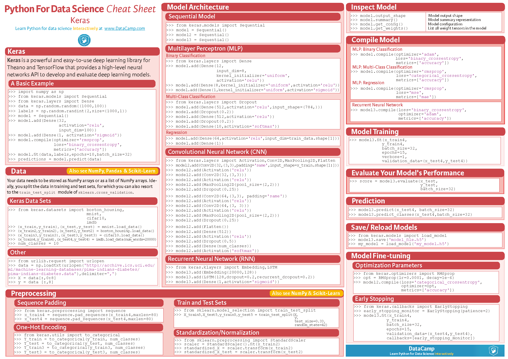

Sklearn 机器学习
1 | #回归 |
参考：Ducumentation，User Guide，中文文档，API 参考
https://kite.com/python/docs/sklearn
Source: yhat

Source: map （蓝色圆框是决策条件，绿色方框是可选算法）

数据与预处理 Preprocessing
sklearn.datasets: Datasets
主要分成三类方法。
- The dataset loaders：加载小型标准数据集。
load_boston([return_X_y]) 波士顿房价回归load_iris([return_X_y]) 鸢尾花分类load_linnerud([return_X_y]) 多元回归load_digits([n_class, return_X_y]) 手写数字分类- 这些数据集可用于快速验证算法性能。Seaborn也有类似方法：
seaborn.load_dataset('datasetName')
- The dataset fetchers：下载和加载大型数据集。
- The dataset generation functions：生成模拟数据集。
默认返回一个类字典，也可用
.引用。包含：‘data’（数据），‘target’（标签），‘DESCR’（描述），‘filename’（文件地址）等。如果加参数
default=False则返回类型是元组tuple(X,y)，包含一个数据集矩阵data和标签向量target。
1 | from sklearn import datasets |
降维 Dimensionality reduction
分类 Classification
回归 Regression
聚类 Clustering
模型选择 Model selection
XGBoost
1 | #回归 |
参考资料：
XGBoost Documentation — xgboost 0.81 documentation
（待续）
LightGBM
参考资料：
Welcome to LightGBM’s documentation! — LightGBM documentation
StatsModels 时间序列
参考资料：
Python Statsmodels 统计包之 OLS 回归
《python时间序列分析》或者Complete guide to create a Time Series Forecast (with Codes in Python)【翻译版《时间序列预测全攻略（附带Python代码）》】
Citation
When using statsmodels in scientific publication, please consider using the following citation:
Seabold, Skipper, and Josef Perktold. “Statsmodels: Econometric and statistical modeling with python.” Proceedings of the 9th Python in Science Conference. 2010.
Bibtex entry:
1 | @inproceedings{seabold2010statsmodels, |
Pyflux
参考资料：
（待续）
TensorFlow 深度学习
1 | import tensorflow as tf |
参考TensorFlow文档。（More）
Tensor是Google开源的深度学习框架，如其名“张量流”，即以处理张量形式的数据流见长。
（待续）
Theano
偏重符号代数处理（from），学术性更强。
（待续）
Tflearn
（待续）
Keras
1 | form tensorflow import keras |
参考： Keras 中文文档
Source: datacamp

（待续）
Pytorch
参考：PyTorch， PyTorch中文文档
（待续）
Caffe
（待续）
NVCaffe
参考：NVCaffe User Guide :: Deep Learning Frameworks Documentation
NVCaffe™ is an NVIDIA-maintained fork of BVLC Caffe tuned for NVIDIA GPUs, particularly in multi-GPU configurations.
MXNet
参考资料：
（待续）
PaddlePaddle
参考资料：
NLTK 自然语言处理
参考资料：
自然语言处理库。
（待续）
Jieba
参考资料：
中文分词。
Jiagu
参考资料：
https://github.com/ownthink/Jiagu，[思知](https://www.ownthink.com/)
Jiagu以BiLSTM等模型为基础，使用大规模语料训练而成。将提供中文分词、词性标注、命名实体识别、关键词抽取、文本摘要、新词发现等常用自然语言处理功能。参考了各大工具优缺点制作，将Jiagu回馈给大家。
使用深度学习模型，效率较慢。（性能评估）
（待续）
Spacy
参考资料：
GitHub - explosion/spaCy: Industrial-strength Natural Language …
（待续）
Gensim
参考资料：
（待续）
HanLP
参考资料：
Lingvo
参考资料：
各种NLP操作难实现？谷歌开源序列建模框架Lingvo - 掘金
Lingvo: a Modular and Scalable Framework for Sequence-to-Sequence Modeling
CNTK 语音识别
参考资料：
语音识别。
（待续）
OpenCV 计算机视觉
参考资料：
opencv-python · PyPI，OpenCV-Python Tutorials - Read the Docs
（待续）